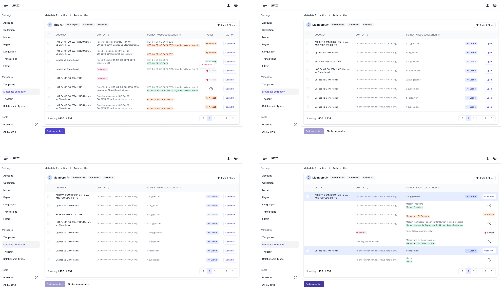
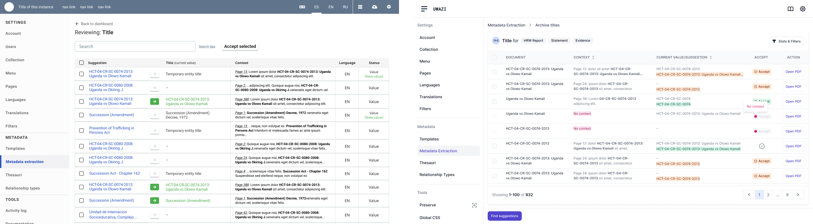
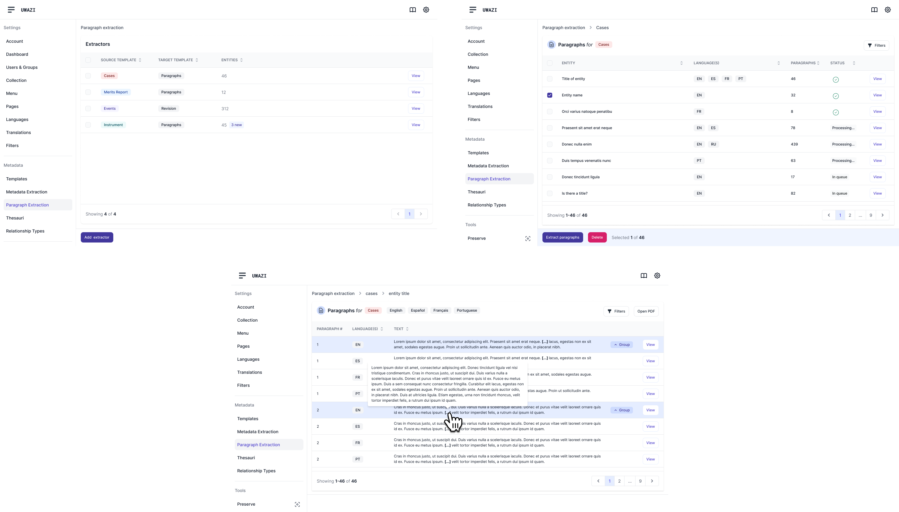
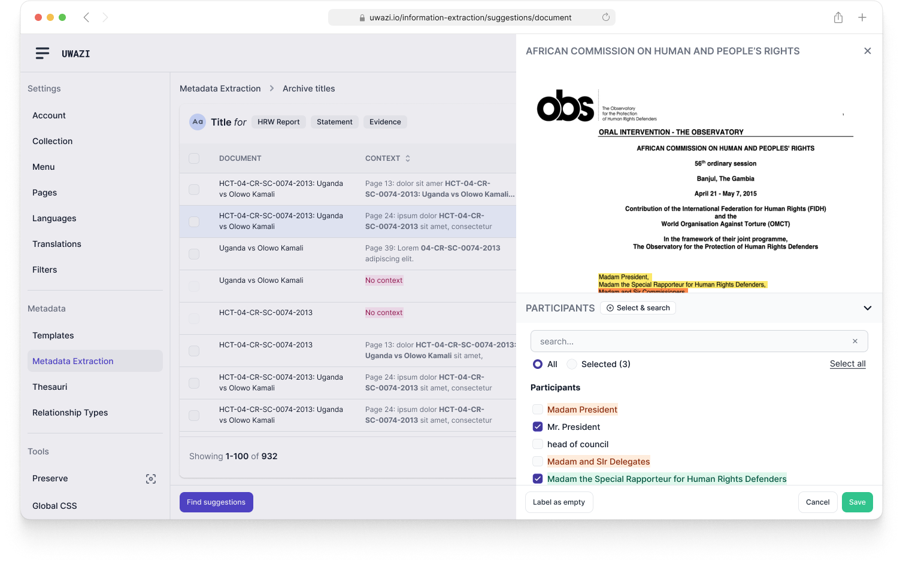

Uwazi: ML-Powered Information Extraction
Designed intuitive workflows that democratize machine learning for human rights researchers, enabling users to train AI models and process thousands of documents without technical expertise. Created interfaces for reviewing, accepting, and discarding AI-extracted information, transforming a complex technical process into streamlined screens that help organizations scale their documentation efforts.
Role
Lead UX/UI Designer
Team
CTO, 2 ML Specialists, 6 Engineers
Timeline
24 months
Tools
MindNode, Figma, Miro, Document analysis tools
The Challenge
Human rights organizations needed to process thousands of documents for evidence extraction, but machine learning tools were too complex and technical for non-technical users to operate effectively. Organizations were drowning in documentation—legal briefs, witness testimonies, government reports, and media coverage—but lacked the technical resources to leverage AI for systematic information extraction.
The existing approach required either hiring expensive technical specialists or manually reading through every document, creating an impossible bottleneck for organizations working on time-sensitive human rights cases. The challenge was designing an interface that made sophisticated AI capabilities accessible to domain experts without technical backgrounds, while maintaining the precision and reliability that human rights work demands.
Manual highlighting of relevant information in a document.
Process & Research
We approached this project by building on our existing deep knowledge of how human rights organizations use Uwazi. Rather than extensive field research, I focused on understanding the specific technical and workflow challenges of integrating machine learning into established documentation processes.
- Internal User Data Analysis: Leveraged existing usage patterns and feedback from Uwazi's user base.
- Technical Feasibility Study: Worked closely with ML engineers to understand AI capabilities and constraints.
- Competitive Analysis: Studied existing AI tools and document processing platforms to identify usability gaps.
- Workflow Integration Planning: Analyzed how ML extraction could enhance rather than disrupt existing Uwazi workflows.
Information extraction and paragraph extraction workflow.
Ideation & Design
Based on our existing understanding of Uwazi users and competitive research insights, I designed experimental workflows that transformed machine learning from a black box into a collaborative partner. The approach was highly iterative, with each design building incrementally on user feedback and technical learnings.
Key Features:
- Simple workflow creation: Interfaces for creating and managing extraction workflows.
- Smart Review Flows: Streamlined interfaces for validating and correcting AI suggestions.
- Batch Processing Tools: Efficient management of large document sets with progress tracking.
- Information Organization: Structured data output that integrates with user workflows.
Information extraction dashboard mockup.
IX modal interface to configure an information extraction model.
IX extractor interface with AI suggestions and user controls.
IX HUBs interface for labeling and updating suggestions over a PDF.
Testing & Iteration
The testing approach was inherently experimental and incremental, leveraging Uwazi's existing user base for rapid feedback cycles. Rather than formal usability testing, we deployed features gradually to gather real-world usage data and iterate based on actual organizational needs.
Screenshots showing before and after AI suggestion interfaces.
PX extractor creation modal interface.
PX dashboard, entity and document extraction interface.
The Solution & Impact
The implemented system transformed how human rights organizations approach large-scale document analysis. Users without technical backgrounds successfully trained AI models to extract relevant information from their specific document types, dramatically reducing the time required for evidence gathering while maintaining accuracy standards.
The foundation we built enables more sophisticated AI capabilities while maintaining the accessible interface paradigm. The system now supports organizations in handling larger case loads and finding evidence more systematically than ever before.
Interface showing a PDF document with highlighted AI-suggested information, and user controls for updating selections.
Paragraph extraction source template selection modal.
Learnings & Next Steps
This project demonstrated that successful AI democratization requires designing for domain expertise rather than technical proficiency. I learned that users' mental models of AI capabilities significantly impact their trust and effective use of machine learning tools.
Future Opportunities:
- Automated document classification and routing based on content type
- Integration with external legal and news databases for comprehensive case building
- Collaborative AI training across multiple human rights organizations
- Advanced visualization tools for understanding patterns across large document collections
This project reinforced that the most powerful AI tools are those that amplify human expertise rather than replace it, requiring interface design that makes sophisticated technology feel like a natural extension of existing professional workflows.
Huridocs | 2021-2025